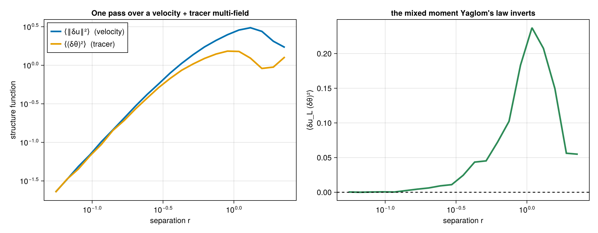
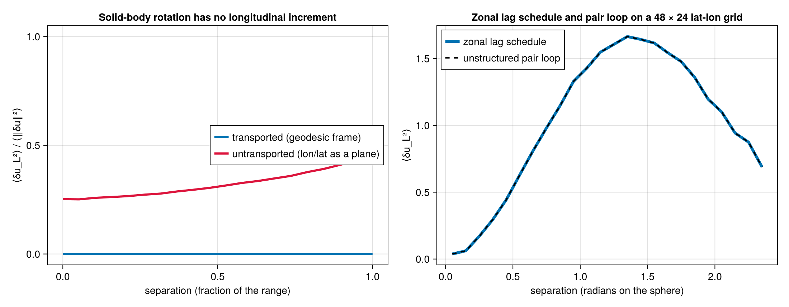
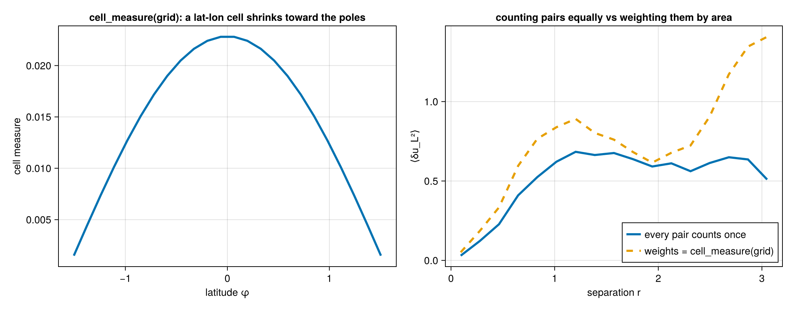

Data, geometry, and bins
Array layouts
| Input | Shape |
|---|---|
| Flat point positions | (D, N) |
| One vector field | (D, N) |
| Shared-position snapshots | x: (D, N), u: (D, N, batch...) |
| Varying-position snapshots | x and u: (D, N, batch...) |
| Gridded vector field | (components, grid_axes...) |
Tensor results place their component axes before the histogram and batch axes; see the result containers. Point lists must contain valid coordinates and field values; grid calculations keep the grid's shape and omit the pairs that touch a masked or invalid cell.
Several fields at once
MultiFields.Fields(vectors = (u, v), scalars = (θ,)) holds several fields sampled at the same points. Vector fields are transported into each pair's frame before they are differenced; scalar fields are differenced as they stand. One pass over the pairs serves every operator that reads the fields: ScalarSFType{P}(field) for ⟨(δθ)^P⟩, MixedSFType{NL, NT, P}(vector_field, scalar_field) for ⟨δu_L^NL ‖δu_T‖^NT (δθ)^P⟩, and VectorDotSFType(a, b) / ScalarDotSFType(a, b) for the cross-field moments that the flux relations take.
using Random: Random
using StructureFunctions: StructureFunctions as SF, Calculations as SFC, StructureFunctionTypes as SFT,
MultiFields as MF
using ComputationalBackends: SerialBackend
rng = Random.MersenneTwister(3)
x = Random.rand(rng, 2, 300)
u = Random.randn(rng, 2, 300)
θ = Random.randn(rng, 300)
f = MF.Fields(vectors = (u,), scalars = (θ,))
bins = range(0.0, 1.0; length = 9)
yaglom = SFC.calculate_structure_function(SFT.MixedSFType{1, 0, 2}(), x, f, bins; backend = SerialBackend())
yaglom.values8-element Vector{Float64}:
-0.16322120345548152
-0.006367901547274401
-0.030993812451471328
0.010803867161824241
0.019665842169959938
0.14470096145961742
0.02496329879130248
0.08443730643349825
The sphere
With a spherical metric (SphericalDistance(radius), Distances.Haversine(radius) or Distances.SphericalAngle()), positions are (longitude, latitude) and each pair's vectors are transported into the pair's geodesic frame before the increment is formed: δu_L is along the great circle joining the two points, and a third vector component is radial. The longitude/latitude unit follows the metric: degrees for Haversine, radians for the others.
A solid-body rotation has no longitudinal increment along any great circle. In the geodesic frame its ⟨δu_L²⟩ vanishes to round-off; treating longitude and latitude as plane coordinates puts most of the increment's energy into δu_L. On a latitude-longitude grid, ZonalLagSchedule computes the geodesic frames once per latitude pair and longitude offset, and gives the same counts as the pair loop over the grid's points.

On the sphere, coincident and antipodal pairs have no unique geodesic; the geometry marks them invalid and they contribute to no bin. Mathematical definitions gives the frame and the transverse conventions.
Weights and masks
A point or cell weight wᵢ gives a pair the mass wᵢwⱼ, in the sums and in the counts alike, so the bin value is Σ wᵢwⱼ v / Σ wᵢwⱼ. Weighted counts are floating point. On a grid, weights = cell_measure(grid) turns the pair average into an area or volume average; on a latitude-longitude grid the cells shrink toward the poles.

A mask removes the pairs that touch an invalid cell. The remaining pairs' average estimates a population statistic under a sampling assumption stated in Spectra, fluxes and fitting.
Bins
A distance bin holds the separations in (left, right]. Edges are strictly increasing:
LinearBinEdges(first_edge, last_edge, n_edges)andLogBinEdges(first_edge, last_edge, n_edges)for regular grids, or a range;LogBinEdges_from_log_edges(range(...))for a grid given in logarithmic coordinates;BinEdges(vector)(or the vector itself) for arbitrary edges;InfPaddedBinEdges(edges)for unbounded first and last intervals.
midpoints gives representative coordinates for plotting; a result stores its edges. Every route and backend places a separation r in bin searchsortedfirst(edges, r) - 1 of the edges as constructed; Bin edges and digitize defines each grid's edges.
Joint calculations have a distance axis and a second axis: the operator's value or the separation's angle. The two have different meanings even when their arrays have the same shape.